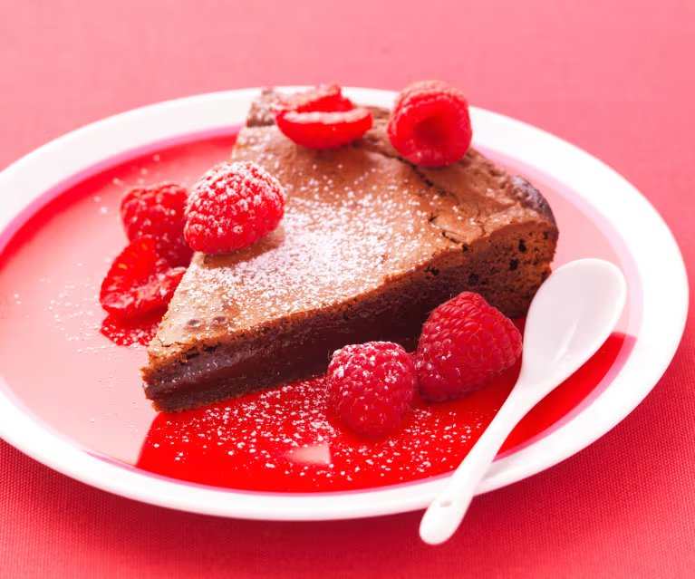

Fondant au chocolat
Ingrédients
10×
- 200 g de chocolat noir
- 180 g de sucre
- 180 g de beurre
- 50 g de farine
- 1 pincée de sel
- 3 oeufs

Préparation
Étape 1
Préchauffer le four à 190ºC. Tapisser un moule de 20cm de papier cuisson.
Étape 2
Mettre 200 g de chocolat noir en morceaux, 180 g de sucre et 180 g de beurre dans le bol et fondre 5 min/60ºC/vitesse 2.
Étape 3
Ajouter 50 g de farine, 1 pincée de sel et 3 oeufs, mixer 15 sec/vitesse 4.
Étape 4
Verser dans le moule et cuire 20 à 30min : la lame d’un couteau doit ressortir propre. Laisser tiédir
Conseils
- Meilleur froid : le coeur devient crémeux.
- Servir saupoudré de sucre glace.
Résumé
200 g de chocolat noir
180 g de sucre
180 g de beurre
fondre 5 min/60ºC/vitesse 2
50 g de farine
1 pincée de sel
3 oeufs
mixer 15 sec/vitesse 4
cuire